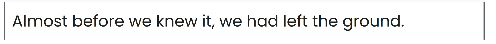

Roboto Slab

This is a slab serif font. I am going to use it for headings. Serifed fonts are more difficult to read on computers but give an air of class or authority. Perfect for headings while also being modern enough to fit on a website. A slab serifed font is ideal for a cities website. This one in particular has many line size variations that will prove very helpful. This will be used on my h1, h2, h3, elements.
Poppins
This is the Poppins font. It is a sans serif font. It is going to constitute the writing on my website. Sans serif fonts are easier to read on devices and it is classy and modern like my previous font. It has many variations should I find a need for them. This will be used in my p elements and any other basic text elements needed. Anything that isn't a headline, so that could include links with the a tag.